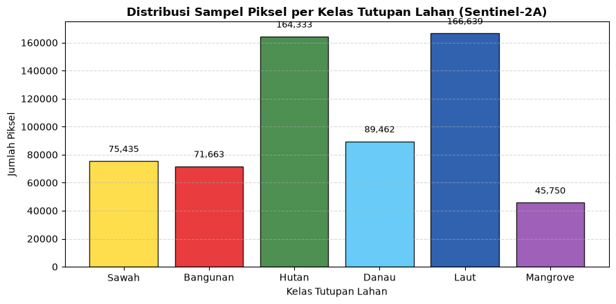
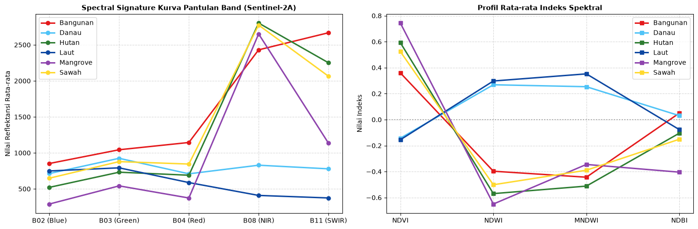
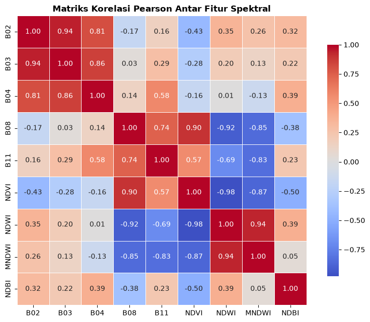

02. Data Understanding: Eksplorasi Dataset Piksel Sentinel-2A#
Karakteristik Data Spektral dan Profil Tutupan Lahan Jawa Timur#
2. Data Understanding & Karakteristik Data Spasial#
2.1. Definisi Domain dan 6 Kelas Tutupan Lahan#
Area of Interest (AOI) mencakup seluruh wilayah daratan dan perairan pesisir Provinsi Jawa Timur. Objek permukaan bumi dikelompokkan ke dalam 6 kelas tutupan lahan utama:
No |
Nama Kelas |
Kode Label |
Definisi & Karakteristik Objek |
Respon Spektral Utama |
|---|---|---|---|---|
1 |
Sawah |
1 |
Lahan pertanian padi basah berpetak. Kondisi bervariasi dari genangan air awal tanam, fase vegetatif hijau pekat, hingga fase pematangan/panen. |
Pantulan NIR sedang-tinggi pada fase vegetatif; nilai SWIR meningkat pada lahan bera/kering. |
2 |
Bangunan |
2 |
Kawasan terbangun perkotaan, permukiman, jalan aspal/beton, dan atap bangunan (genteng/seng). |
Pantulan tinggi pada band SWIR (B11) dan Red (B04); nilai NDBI positif tinggi; NDVI rendah. |
3 |
Hutan (Lahan Hijau) |
3 |
Vegetasi alami kanopi pohon lebat, hutan pegunungan, perbukitan hijau, dan perkebunan tahunan rapat. |
Pantulan sangat tinggi pada NIR (B08) akibat struktur sel daun; serapan kuat pada Red (B04); NDVI sangat tinggi. |
4 |
Danau |
4 |
Badan air tawar pedalaman (danau alami, waduk, telaga, bendungan) berarus tenang. |
Penyerapan kuat pada inframerah (NIR dan SWIR); nilai NDWI dan MNDWI sangat positif; NDVI negatif. |
5 |
Laut (Perairan Terbuka) |
5 |
Badan air asin laut terbuka di pesisir utara dan selatan Jawa Timur serta Selat Madura. |
Pantulan dominan pada band Blue (B02) dan Green (B03); penyerapan hampir total pada NIR/SWIR; NDWI tinggi. |
6 |
Mangrove |
6 |
Komunitas hutan bakau pesisir yang toleran terhadap air asin/payau, tumbuh di muara sungai dan pantai berlumpur. |
Kombinasi sinyal vegetasi lebat (NIR tinggi) dan pengaruh substrat air/lumpur basah (SWIR rendah, MNDWI relatif tinggi dibanding hutan daratan). |
2.2. Karakteristik Citra Satelit Sentinel-2A Level-2A#
Dataset citra satelit diperoleh dari satelit optik Sentinel-2A Level-2A (Bottom-of-Atmosphere / BOA Surface Reflectance) yang disediakan oleh European Space Agency (ESA) melalui Copernicus Data Space Ecosystem (CDSE). Akuisisi data dilakukan untuk rentang waktu 1 September 2026 – 30 September 2026 dengan ambang batas tutupan awan (cloud cover) maksimal 30%.
Band spektral yang digunakan meliputi:
B02 (Blue - 490 nm): Resolusi spasial 10 meter. Sensitif terhadap kedalaman air dan hamburan atmosfer.
B03 (Green - 560 nm): Resolusi spasial 10 meter. Puncak pantulan klorofil daun pada spektrum tampak dan deteksi air bersih.
B04 (Red - 665 nm): Resolusi spasial 10 meter. Pita serapan utama klorofil; sangat berguna membedakan vegetasi hidup dari tanah terbuka atau bangunan.
B08 (Near Infrared / NIR - 842 nm): Resolusi spasial 10 meter. Pantulan maksimal struktur kanopi sel mesofil daun vegetasi; diserap hampir sempurna oleh badan air jernih.
B11 (Short-Wave Infrared / SWIR - 1610 nm): Resolusi spasial 20 meter (di-resample ke 10 m). Sensitif terhadap kadar kelembapan tanah, kebasahan vegetasi, dan material semen/bebatuan bangunan.
SCL (Scene Classification Layer): Lapisan klasifikasi kualitas piksel otomatis untuk memfilter piksel yang mengandung awan (tebal, sedang, cirrus), bayangan awan (cloud shadow), serta piksel jenuh (defective).
2.3. Rekayasa Fitur Indeks Spektral (Spectral Indices)#
Untuk mempertegas batas pemisah antar-kelas (feature separability), dihitung empat indeks spektral turunan yang dinormalisasi:
Normalized Difference Vegetation Index (NDVI) Membedakan kerapatan dan kehijauan vegetasi dari non-vegetasi: $\(NDVI = \frac{B08 - B04}{B08 + B04 + \epsilon}\)$
Normalized Difference Water Index (NDWI - McFeeters) Mengisolasi badan air permukaan terbuka dari tutupan lahan daratan: $\(NDWI = \frac{B03 - B08}{B03 + B08 + \epsilon}\)$
Modified Normalized Difference Water Index (MNDWI - Xu) Meningkatkan akurasi deteksi air dengan menekan sinyal pantulan area terbangun/bangunan: $\(MNDWI = \frac{B03 - B11}{B03 + B11 + \epsilon}\)$
Normalized Difference Built-up Index (NDBI) Mendeteksi konsentrasi kawasan terbangun, perkerasan beton, dan lahan terbuka: $\(NDBI = \frac{B11 - B08}{B11 + B08 + \epsilon}\)$
(Nilai \(\epsilon = 1 \times 10^{-9}\) ditambahkan pada penyebut untuk mencegah kesalahan pembagian dengan nol / division by zero).
Notebook ini memuat dataset piksel Sentinel-2A hasil ekstraksi openEO (piksel_s2.csv), menganalisis struktur data, missing values, distribusi kelas, profil pantulan spektral (spectral signature), dan korelasi antar fitur spektral.
import threading
import time
from datetime import datetime
from pathlib import Path
import geopandas as gpd
import numpy as np
import openeo
import pandas as pd
import rasterio
from openeo.extra.job_management import CsvJobDatabase, MultiBackendJobManager
from rasterio.features import rasterize
from rasterio.mask import mask as rio_mask
from rasterio.warp import transform as warp_transform
from rasterio.windows import Window
from shapely.geometry import box
from shapely.validation import make_valid
# ==============================================================================
# KONFIGURASI
# ==============================================================================
SUMBER = { # nama kelas: (file, kode label)
"Sawah": ("mystorage/jawatimur/sawah.zip", 1),
"Bangunan": ("mystorage/jawatimur/pemukiman.zip", 2),
"Hutan": ("mystorage/jawatimur/hutan.zip", 3),
"Danau": ("mystorage/jawatimur/danau.zip", 4),
"Laut": ("mystorage/jawatimur/laut.zip", 5),
"Mangrove": ("mystorage/jawatimur/magrove.zip", 6),
}
TILE_DEG = 0.20 # ukuran tile ~22 km (~2200 x 2200 piksel @10 m)
BUFFER_DEG = 0.005 # margin ~500 m di sekeliling sampel
TANGGAL = ["2026-09-01", "2026-09-30"]
BANDS = ["B02", "B03", "B04", "B08", "B11"] # Blue, Green, Red, NIR, SWIR
PAKAI_MASK_SCL = True # mask awan/bayangan per piksel pakai band SCL
MAX_CLOUD = 30 # filter awan level scene (kalau PAKAI_MASK_SCL=False, pakai ~10)
PARALEL = 2 # job bersamaan (akun gratis CDSE biasanya max 2)
# Ekstraksi piksel
MAKS_PIKSEL_PER_POLIGON = 2000 # None = ambil SEMUA piksel (hati-hati: poligon laut/hutan bisa jutaan -> CSV sangat besar)
SEED = 42
BUAT_RASTER_LABEL = True # buat label_<tile>.tif di samping citra tiap tile
OUT_DIR = Path("hasil_s2_piksel")
JOB_DB_PATH = OUT_DIR / "daftar_job.csv"
PETA_CSV = OUT_DIR / "peta_sampel_tile.csv"
PIKSEL_OUT = OUT_DIR / "piksel_s2.csv"
# ==============================================================================
# 1. BACA & GABUNGKAN SAMPEL
# ==============================================================================
def baca_semua() -> gpd.GeoDataFrame:
bagian = []
for nama, (file, label) in SUMBER.items():
g = gpd.read_file(file).to_crs("EPSG:4326")
# nomor fitur asli di file sumber (dicatat SEBELUM filter agar tetap stabil)
g["poligon_no"] = np.arange(len(g))
g = g[g.geometry.notna() & ~g.geometry.is_empty].copy()
g["geometry"] = g.geometry.apply(lambda x: x if x.is_valid else make_valid(x))
g["label_teks"] = nama
g["label"] = label
g["poligon_id"] = [f"{nama}_{n:04d}" for n in g["poligon_no"]]
g = g[["poligon_id", "poligon_no", "label", "label_teks", "geometry"]]
print(f"Jumlah sampel {nama:<9}: {len(g)} bounds={[round(v, 3) for v in g.total_bounds]}")
bagian.append(g)
gdf = gpd.GeoDataFrame(pd.concat(bagian, ignore_index=True), crs="EPSG:4326")
print(f"Total sampel gabungan : {len(gdf)}")
return gdf
# ==============================================================================
# 2. BAGI JADI TILE (poligon masuk ke semua sel yang dilewatinya)
# ==============================================================================
def buat_tile(gdf: gpd.GeoDataFrame):
T, B = TILE_DEG, BUFFER_DEG
peta, batas, sel_xy = [], {}, {}
for idx, geom in gdf.geometry.items():
minx, miny, maxx, maxy = geom.bounds
for gx in range(int(np.floor(minx / T)), int(np.floor(maxx / T)) + 1):
for gy in range(int(np.floor(miny / T)), int(np.floor(maxy / T)) + 1):
sel = box(gx * T, gy * T, (gx + 1) * T, (gy + 1) * T)
if not geom.intersects(sel):
continue
bagian = geom.intersection(sel)
if bagian.is_empty:
continue
b = bagian.bounds
tid = f"x{gx}_y{gy}"
peta.append({"tile_id": tid, "sampel_id": idx, "poligon_id": gdf.at[idx, "poligon_id"]})
sel_xy[tid] = (gx, gy)
if tid in batas:
o = batas[tid]
batas[tid] = (min(o[0], b[0]), min(o[1], b[1]), max(o[2], b[2]), max(o[3], b[3]))
else:
batas[tid] = b
tiles = pd.DataFrame(
[
{
"tile_id": tid,
"gx": sel_xy[tid][0],
"gy": sel_xy[tid][1],
"west": b[0] - B,
"south": b[1] - B,
"east": b[2] + B,
"north": b[3] + B,
}
for tid, b in batas.items()
]
)
peta = pd.DataFrame(peta)
tiles["n_sampel"] = tiles["tile_id"].map(peta.groupby("tile_id")["sampel_id"].nunique())
lebar_km = (tiles.east - tiles.west) * 111.32 * np.cos(np.radians((tiles.north + tiles.south) / 2))
tinggi_km = (tiles.north - tiles.south) * 110.57
print(f"\nJumlah tile (job) : {len(tiles)}")
print(f"Ukuran tile terbesar : {lebar_km.max():.1f} km x {tinggi_km.max():.1f} km")
print(f"Total area diunduh : {(lebar_km * tinggi_km).sum():,.0f} km2")
return tiles, peta
# ==============================================================================
# 3. JALANKAN BATCH JOB PER TILE
# ==============================================================================
def _jam() -> str:
return datetime.now().strftime("%H:%M:%S")
def start_job(row, connection, **kwargs):
print(f"[{_jam()}] >> Mengirim job tile {row['tile_id']} ({row.get('n_sampel', '?')} poligon)...", flush=True)
bbox = {
"west": float(row["west"]),
"south": float(row["south"]),
"east": float(row["east"]),
"north": float(row["north"]),
}
bands = BANDS + ["SCL"] if PAKAI_MASK_SCL else BANDS
cube = connection.load_collection(
"SENTINEL2_L2A",
spatial_extent=bbox,
temporal_extent=TANGGAL,
bands=bands,
max_cloud_cover=MAX_CLOUD,
)
if PAKAI_MASK_SCL:
scl = cube.band("SCL")
# 1=jenuh, 3=bayangan awan, 8/9=awan sedang/tinggi, 10=cirrus
mask_awan = (scl == 1) | (scl == 3) | (scl == 8) | (scl == 9) | (scl == 10)
cube = cube.filter_bands(BANDS).mask(mask_awan)
komposit = cube.median_time()
return komposit.create_job(title=f"s2_{row['tile_id']}", out_format="GTiff")
INTERVAL_LAPOR = 30 # detik antar laporan progres di terminal
class ManagerBerlapor(MultiBackendJobManager):
"""Manager job yang mencetak pesan saat job selesai / gagal."""
def on_job_done(self, job, row):
print(f"[{_jam()}] [OK] Tile {row['tile_id']} selesai (job {job.job_id}), mengunduh hasil...", flush=True)
super().on_job_done(job, row)
print(f"[{_jam()}] [OK] Tile {row['tile_id']} terunduh.", flush=True)
def on_job_error(self, job, row):
print(f"[{_jam()}] [ERROR] Tile {row['tile_id']} gagal (job {job.job_id}). Log disimpan di folder job.", flush=True)
super().on_job_error(job, row)
def _lapor_berkala(job_db, berhenti: threading.Event):
mulai = time.time()
while not berhenti.wait(INTERVAL_LAPOR):
try:
df = job_db.read()
except Exception: # file sedang ditulis manager; lewati satu siklus
continue
n = len(df)
hitung = df["status"].value_counts().to_dict()
selesai = hitung.get("finished", 0)
gagal = sum(hitung.get(s, 0) for s in ("error", "start_failed", "skipped"))
jalan = hitung.get("running", 0) + hitung.get("queued", 0) + hitung.get("created", 0)
belum = hitung.get("not_started", 0)
persen = 100 * selesai / n if n else 0
menit = (time.time() - mulai) / 60
print(
f"[{_jam()}] Progres job: {selesai}/{n} selesai ({persen:.0f}%) | "
f"berjalan/antre {jalan} | belum mulai {belum} | gagal {gagal} | {menit:.1f} menit",
flush=True,
)
def jalankan_job(tiles: pd.DataFrame, ulangi_error: bool = True):
OUT_DIR.mkdir(exist_ok=True)
conn = openeo.connect("openeo.dataspace.copernicus.eu")
conn.authenticate_oidc()
manager = ManagerBerlapor(root_dir=OUT_DIR, poll_sleep=30)
manager.add_backend("cdse", connection=conn, parallel_jobs=PARALEL)
job_db = CsvJobDatabase(JOB_DB_PATH)
if not job_db.exists():
job_db.initialize_from_df(tiles)
elif ulangi_error:
df = job_db.read()
gagal = df["status"].isin(["error", "start_failed", "skipped"])
if gagal.any():
print(f"Mengulang {int(gagal.sum())} job yang sebelumnya gagal.")
df.loc[gagal, "status"] = "not_started"
job_db.persist(df)
# thread pemantau: cetak ringkasan status job tiap INTERVAL_LAPOR detik
berhenti = threading.Event()
pemantau = threading.Thread(target=_lapor_berkala, args=(job_db, berhenti), daemon=True)
pemantau.start()
try:
manager.run_jobs(start_job=start_job, job_db=job_db)
finally:
berhenti.set()
pemantau.join(timeout=5)
df = job_db.read()
print("\nRingkasan status job:")
print(df["status"].value_counts().to_string())
return df
# ==============================================================================
# 4. EKSTRAK KELAS PER PIKSEL -> CSV
# ==============================================================================
def _nama_band(src) -> list:
desc = list(src.descriptions or [])
if len(desc) == src.count and all(desc) and set(BANDS) <= set(desc):
return desc
return BANDS # asumsi urutan band sama dengan permintaan
def _valid_mask(data, nodata, masked=None):
"""data: (band, H, W). Piksel valid = semua band terbatas, > 0, bukan nodata."""
ok = np.isfinite(data).all(axis=0) & (data > 0).all(axis=0)
if nodata is not None and not np.isnan(nodata):
ok &= ~(data == nodata).any(axis=0)
if masked is not None:
ok &= ~masked
return ok
def _piksel_geom(src, geom):
"""Semua piksel valid yang pusatnya di dalam geometri.
Return (nilai[band, n], baris_raster, kolom_raster, x, y) dalam CRS raster, atau None."""
nodata = src.nodata
if geom.geom_type == "Point":
rr, cc = src.index(geom.x, geom.y)
if not (0 <= rr < src.height and 0 <= cc < src.width):
return None
data = src.read(window=Window(cc, rr, 1, 1)).astype("float64") # (band,1,1)
ok = _valid_mask(data, nodata)
row0, col0 = rr, cc
else:
ok = None
for all_touched in (False, True): # poligon sangat kecil: coba lagi dengan all_touched
try:
arr, tr = rio_mask(src, [geom], crop=True, all_touched=all_touched, filled=False)
except ValueError: # tidak beririsan dengan raster
return None
data = np.ma.getdata(arr).astype("float64")
ok = _valid_mask(data, nodata, np.ma.getmaskarray(arr).any(axis=0))
row0 = int(round((tr.f - src.transform.f) / src.transform.e))
col0 = int(round((tr.c - src.transform.c) / src.transform.a))
if ok.any():
break
if ok is None or not ok.any():
return None
r_idx, c_idx = np.nonzero(ok)
if len(r_idx) == 0:
return None
nilai = data[:, r_idx, c_idx]
px_row, px_col = row0 + r_idx, col0 + c_idx
xs, ys = rasterio.transform.xy(src.transform, px_row, px_col)
return nilai, px_row, px_col, np.asarray(xs), np.asarray(ys)
def tambah_indeks(df: pd.DataFrame) -> pd.DataFrame:
e = 1e-9
df["NDVI"] = (df["B08"] - df["B04"]) / (df["B08"] + df["B04"] + e)
df["NDWI"] = (df["B03"] - df["B08"]) / (df["B03"] + df["B08"] + e)
df["MNDWI"] = (df["B03"] - df["B11"]) / (df["B03"] + df["B11"] + e)
df["NDBI"] = (df["B11"] - df["B08"]) / (df["B11"] + df["B08"] + e)
return df
def _tif_tile(r):
tifs = sorted(p for p in OUT_DIR.glob(f"job_{r['id']}/*.tif") if not p.name.startswith("label_"))
return tifs[0] if tifs else None
def ekstrak_piksel(gdf, db, peta) -> pd.DataFrame:
rng = np.random.default_rng(SEED)
T = TILE_DEG
potongan = []
selesai = db[db["status"] == "finished"]
print(f"\nEkstraksi piksel dari {len(selesai)} tile yang selesai...")
total_tile = len(selesai)
total_piksel = 0
t0 = time.time()
for no_tile, (_, r) in enumerate(selesai.iterrows(), start=1):
tif = _tif_tile(r)
if tif is None:
print(f" [!] File .tif tidak ditemukan untuk tile {r['tile_id']} (job {r['id']})")
continue
cx0, cy0 = int(r["gx"]) * T, int(r["gy"]) * T
ids = peta.loc[peta["tile_id"] == r["tile_id"], "sampel_id"].unique()
n_poli = len(ids)
piksel_tile = 0
print(f"[{_jam()}] Tile {no_tile}/{total_tile} ({r['tile_id']}): {n_poli} poligon", flush=True)
with rasterio.open(tif) as src:
nama_band = _nama_band(src)
sub_r = gdf.loc[ids].to_crs(src.crs)
for no_poli, (idx, row) in enumerate(sub_r.iterrows(), start=1):
if no_poli % 25 == 0 or no_poli == n_poli:
print(
f" poligon {no_poli}/{n_poli} | piksel tile ini: {piksel_tile:,} | "
f"total: {total_piksel:,} | {(time.time() - t0) / 60:.1f} menit",
end="\r", flush=True,
)
hasil = _piksel_geom(src, row.geometry)
if hasil is None:
continue
nilai, px_row, px_col, xs, ys = hasil
lon, lat = warp_transform(src.crs, "EPSG:4326", xs.tolist(), ys.tolist())
lon, lat = np.asarray(lon), np.asarray(lat)
# hanya piksel yang pusatnya di dalam sel grid tile ini -> tidak ada duplikat antar-tile
pilih = np.flatnonzero((lon >= cx0) & (lon < cx0 + T) & (lat >= cy0) & (lat < cy0 + T))
if len(pilih) == 0:
continue
if MAKS_PIKSEL_PER_POLIGON and len(pilih) > MAKS_PIKSEL_PER_POLIGON:
pilih = rng.choice(pilih, MAKS_PIKSEL_PER_POLIGON, replace=False)
d = {
"poligon_id": row["poligon_id"], # penanda poligon asal
"poligon_no": row["poligon_no"],
"sampel_id": idx,
"tile_id": r["tile_id"],
"label": row["label"],
"label_teks": row["label_teks"],
"px_row": px_row[pilih],
"px_col": px_col[pilih],
"lon": lon[pilih],
"lat": lat[pilih],
}
for i, nb in enumerate(nama_band):
d[nb] = nilai[i, pilih]
potongan.append(pd.DataFrame(d))
piksel_tile += len(pilih)
total_piksel += len(pilih)
print(f"\n -> tile {r['tile_id']} selesai: {piksel_tile:,} piksel", flush=True)
if not potongan:
print("Tidak ada piksel yang berhasil diekstrak.")
return pd.DataFrame()
df = pd.concat(potongan, ignore_index=True)
# piksel yang sama dimiliki poligon kelas berbeda = label ambigu -> dibuang
kunci = ["tile_id", "px_row", "px_col"]
ganda = df.duplicated(kunci, keep=False)
konflik = ganda & (df.groupby(kunci)["label"].transform("nunique") > 1)
if konflik.any():
print(f"Membuang {int(konflik.sum())} piksel dengan label bertabrakan antar-kelas.")
df = df[~konflik]
# piksel yang sama dimiliki >1 poligon dari kelas yang sama: simpan satu baris saja
# (poligon_id = poligon yang pertama memprosesnya)
n_sebelum = len(df)
df = df.drop_duplicates(kunci).reset_index(drop=True)
if n_sebelum != len(df):
print(f"Menghapus {n_sebelum - len(df)} piksel ganda (poligon sekelas yang saling tumpang tindih).")
df = tambah_indeks(df)
OUT_DIR.mkdir(exist_ok=True)
df.to_csv(PIKSEL_OUT, index=False)
print(f"\nTersimpan: {PIKSEL_OUT}")
print(f"Total piksel berlabel: {len(df):,}")
print(df.groupby("label_teks").size().to_string())
print(f"Jumlah poligon yang menghasilkan piksel: {df['poligon_id'].nunique()}")
return df
# ==============================================================================
# 5. (OPSIONAL) RASTER LABEL GeoTIFF SEJAJAR DENGAN CITRA TILE
# ==============================================================================
def buat_raster_label(gdf, db, peta):
"""Tulis label_<tile>.tif (uint8, 0 = tanpa label) pada grid yang sama dengan citra tile."""
selesai = db[db["status"] == "finished"]
total = len(selesai)
for no, (_, r) in enumerate(selesai.iterrows(), start=1):
tif = _tif_tile(r)
if tif is None:
continue
print(f"[{_jam()}] Raster label {no}/{total}: tile {r['tile_id']}", flush=True)
ids = peta.loc[peta["tile_id"] == r["tile_id"], "sampel_id"].unique()
with rasterio.open(tif) as src:
sub_r = gdf.loc[ids].to_crs(src.crs)
shapes = [(g, int(l)) for g, l in zip(sub_r.geometry, sub_r["label"])]
lab = rasterize(
shapes, out_shape=(src.height, src.width), transform=src.transform,
fill=0, dtype="uint8",
)
profil = dict(
driver="GTiff", height=src.height, width=src.width, count=1, dtype="uint8",
crs=src.crs, transform=src.transform, nodata=0, compress="deflate",
)
keluar = tif.with_name(f"label_{r['tile_id']}.tif")
with rasterio.open(keluar, "w", **profil) as dst:
dst.write(lab, 1)
print("Raster label selesai (label_<tile>.tif di folder tiap job).")
# ==============================================================================
# MAIN
# ==============================================================================
def main(jalankan: bool = True, ekstrak: bool = True, ulangi_error: bool = True):
gdf = baca_semua()
tiles, peta = buat_tile(gdf)
OUT_DIR.mkdir(exist_ok=True)
tiles.to_csv(OUT_DIR / "rencana_tile.csv", index=False)
peta.to_csv(PETA_CSV, index=False)
# tabel referensi poligon (tanpa geometri) untuk join dengan CSV piksel
gdf.drop(columns="geometry").assign(
luas_derajat2=gdf.geometry.area
).to_csv(OUT_DIR / "daftar_poligon.csv", index_label="sampel_id")
if jalankan:
db = jalankan_job(tiles, ulangi_error=ulangi_error)
else:
db = CsvJobDatabase(JOB_DB_PATH).read()
hasil = None
if ekstrak:
hasil = ekstrak_piksel(gdf, db, peta)
if BUAT_RASTER_LABEL:
buat_raster_label(gdf, db, peta)
return hasil if hasil is not None else db
if __name__ == "__main__":
main()
---------------------------------------------------------------------------
DataSourceError Traceback (most recent call last)
Cell In[1], line 466
462 return hasil if hasil is not None else db
465 if __name__ == "__main__":
--> 466 main()
Cell In[1], line 441, in main(jalankan, ekstrak, ulangi_error)
440 def main(jalankan: bool = True, ekstrak: bool = True, ulangi_error: bool = True):
--> 441 gdf = baca_semua()
442 tiles, peta = buat_tile(gdf)
444 OUT_DIR.mkdir(exist_ok=True)
Cell In[1], line 58, in baca_semua()
56 bagian = []
57 for nama, (file, label) in SUMBER.items():
---> 58 g = gpd.read_file(file).to_crs("EPSG:4326")
59 # nomor fitur asli di file sumber (dicatat SEBELUM filter agar tetap stabil)
60 g["poligon_no"] = np.arange(len(g))
File ~\AppData\Local\Programs\Python\Python312\Lib\site-packages\geopandas\io\file.py:316, in _read_file(filename, bbox, mask, columns, rows, engine, **kwargs)
313 filename = response.read()
315 if engine == "pyogrio":
--> 316 return _read_file_pyogrio(
317 filename, bbox=bbox, mask=mask, columns=columns, rows=rows, **kwargs
318 )
320 elif engine == "fiona":
321 if pd.api.types.is_file_like(filename):
File ~\AppData\Local\Programs\Python\Python312\Lib\site-packages\geopandas\io\file.py:576, in _read_file_pyogrio(path_or_bytes, bbox, mask, rows, **kwargs)
567 warnings.warn(
568 "The 'include_fields' and 'ignore_fields' keywords are deprecated, and "
569 "will be removed in a future release. You can use the 'columns' keyword "
(...)
572 stacklevel=3,
573 )
574 kwargs["columns"] = kwargs.pop("include_fields")
--> 576 return pyogrio.read_dataframe(path_or_bytes, bbox=bbox, **kwargs)
File ~\AppData\Local\Programs\Python\Python312\Lib\site-packages\pyogrio\geopandas.py:382, in read_dataframe(path_or_buffer, layer, encoding, columns, read_geometry, force_2d, skip_features, max_features, where, bbox, mask, fids, sql, sql_dialect, fid_as_index, use_arrow, on_invalid, arrow_to_pandas_kwargs, datetime_as_string, mixed_offsets_as_utc, **kwargs)
374 gdal_force_2d = False if use_arrow else force_2d
376 # Always read datetimes as string values to preserve (mixed) time zone info
377 # correctly. If arrow is not used, it is needed because numpy does not
378 # directly support time zones + performance is also a lot better. If arrow
379 # is used, needed because datetime columns don't support mixed time zone
380 # offsets + e.g. for .fgb files time zone info isn't handled correctly even
381 # for unique time zone offsets if datetimes are not read as string.
--> 382 result = read_func(
383 path_or_buffer,
384 layer=layer,
385 encoding=encoding,
386 columns=columns,
387 read_geometry=read_geometry,
388 force_2d=gdal_force_2d,
389 skip_features=skip_features,
390 max_features=max_features,
391 where=where,
392 bbox=bbox,
393 mask=mask,
394 fids=fids,
395 sql=sql,
396 sql_dialect=sql_dialect,
397 return_fids=fid_as_index,
398 datetime_as_string=True,
399 **kwargs,
400 )
402 if use_arrow:
403 import pyarrow as pa
File ~\AppData\Local\Programs\Python\Python312\Lib\site-packages\pyogrio\raw.py:200, in read(path_or_buffer, layer, encoding, columns, read_geometry, force_2d, skip_features, max_features, where, bbox, mask, fids, sql, sql_dialect, return_fids, datetime_as_string, **kwargs)
59 """Read OGR data source into numpy arrays.
60
61 IMPORTANT: non-linear geometry types (e.g., MultiSurface) are converted
(...)
196
197 """
198 dataset_kwargs = _preprocess_options_key_value(kwargs) if kwargs else {}
--> 200 return ogr_read(
201 get_vsi_path_or_buffer(path_or_buffer),
202 layer=layer,
203 encoding=encoding,
204 columns=columns,
205 read_geometry=read_geometry,
206 force_2d=force_2d,
207 skip_features=skip_features,
208 max_features=max_features or 0,
209 where=where,
210 bbox=bbox,
211 mask=_mask_to_wkb(mask),
212 fids=fids,
213 sql=sql,
214 sql_dialect=sql_dialect,
215 return_fids=return_fids,
216 dataset_kwargs=dataset_kwargs,
217 datetime_as_string=datetime_as_string,
218 )
File pyogrio/_io.pyx:1708, in pyogrio._io.ogr_read()
File pyogrio/_io.pyx:290, in pyogrio._io.ogr_open()
DataSourceError: '/vsizip/mystorage/jawatimur/sawah.zip' does not exist in the file system, and is not recognized as a supported dataset name.
import os
import sys
from pathlib import Path
import pandas as pd
import numpy as np
import matplotlib.pyplot as plt
import seaborn as sns
# Setup direktori kerja relatif
BASE_DIR = Path.cwd()
DATA_DIR = BASE_DIR / "data"
OUT_DIR = BASE_DIR / "output"
OUT_DIR.mkdir(parents=True, exist_ok=True)
# Memeriksa ketersediaan file input
DATA_FILE = DATA_DIR / "piksel_s2.csv"
if not DATA_FILE.exists():
raise FileNotFoundError(
f"File {DATA_FILE} tidak ditemukan! Pastikan file 'piksel_s2.csv' telah diletakkan di dalam folder 'data/'."
)
print(f"Memuat dataset dari: {DATA_FILE}")
df_raw = pd.read_csv(DATA_FILE)
print(f"Dimensi dataset mentah: {df_raw.shape[0]:,} baris x {df_raw.shape[1]} kolom")
Memuat dataset dari: D:\tugas psd\website-jupyterbook\UTS\data\piksel_s2.csv
Dimensi dataset mentah: 613,282 baris x 19 kolom
1. Struktur Data & Pengecekan Missing Value#
Memeriksa tipe data setiap kolom, nilai kosong (missing values), serta kolom fitur spektral dan indeks.
print("=== INFORMASI STRUKTUR DATASET ===")
print(df_raw.info())
print("\n=== PENGECEKAN MISSING VALUES ===")
missing = df_raw.isnull().sum()
print(missing[missing > 0] if missing.sum() > 0 else "Tidak ada missing value pada dataset mentah.")
FITUR_SPEKTRAL = ['B02', 'B03', 'B04', 'B08', 'B11', 'NDVI', 'NDWI', 'MNDWI', 'NDBI']
print(f"\nFitur yang digunakan ({len(FITUR_SPEKTRAL)} fitur): {FITUR_SPEKTRAL}")
display(df_raw.head())
=== INFORMASI STRUKTUR DATASET ===
<class 'pandas.core.frame.DataFrame'>
RangeIndex: 613282 entries, 0 to 613281
Data columns (total 19 columns):
# Column Non-Null Count Dtype
--- ------ -------------- -----
0 poligon_id 613282 non-null object
1 poligon_no 613282 non-null int64
2 sampel_id 613282 non-null int64
3 tile_id 613282 non-null object
4 label 613282 non-null int64
5 label_teks 613282 non-null object
6 px_row 613282 non-null int64
7 px_col 613282 non-null int64
8 lon 613282 non-null float64
9 lat 613282 non-null float64
10 B02 613282 non-null float64
11 B03 613282 non-null float64
12 B04 613282 non-null float64
13 B08 613282 non-null float64
14 B11 613282 non-null float64
15 NDVI 613282 non-null float64
16 NDWI 613282 non-null float64
17 MNDWI 613282 non-null float64
18 NDBI 613282 non-null float64
dtypes: float64(11), int64(5), object(3)
memory usage: 88.9+ MB
None
=== PENGECEKAN MISSING VALUES ===
Tidak ada missing value pada dataset mentah.
Fitur yang digunakan (9 fitur): ['B02', 'B03', 'B04', 'B08', 'B11', 'NDVI', 'NDWI', 'MNDWI', 'NDBI']
| poligon_id | poligon_no | sampel_id | tile_id | label | label_teks | px_row | px_col | lon | lat | B02 | B03 | B04 | B08 | B11 | NDVI | NDWI | MNDWI | NDBI | |
|---|---|---|---|---|---|---|---|---|---|---|---|---|---|---|---|---|---|---|---|
| 0 | Sawah_0000 | 0 | 0 | x556_y-38 | 1 | Sawah | 643 | 107 | 111.204597 | -7.462614 | 739.0 | 957.0 | 1074.0 | 2240.0 | 2471.0 | 0.351841 | -0.401314 | -0.441657 | 0.049034 |
| 1 | Sawah_0000 | 0 | 0 | x556_y-38 | 1 | Sawah | 643 | 108 | 111.204688 | -7.462614 | 674.0 | 897.0 | 1006.0 | 2184.0 | 2462.0 | 0.369279 | -0.417722 | -0.465912 | 0.059836 |
| 2 | Sawah_0000 | 0 | 0 | x556_y-38 | 1 | Sawah | 643 | 109 | 111.204778 | -7.462614 | 663.0 | 912.0 | 994.0 | 2423.0 | 2462.0 | 0.418203 | -0.453073 | -0.459395 | 0.007984 |
| 3 | Sawah_0000 | 0 | 0 | x556_y-38 | 1 | Sawah | 643 | 110 | 111.204869 | -7.462614 | 629.0 | 844.0 | 873.0 | 2455.0 | 2349.0 | 0.475361 | -0.488330 | -0.471344 | -0.022065 |
| 4 | Sawah_0000 | 0 | 0 | x556_y-38 | 1 | Sawah | 644 | 106 | 111.204506 | -7.462705 | 759.0 | 1010.0 | 1065.0 | 2622.0 | 2272.0 | 0.422295 | -0.443833 | -0.384522 | -0.071516 |
2. Distribusi Kelas Tutupan Lahan (Data Mentah Piksel)#
Enam kelas tutupan lahan:
Sawah (
label = 1)Bangunan (
label = 2)Hutan (
label = 3)Danau (
label = 4)Laut (
label = 5)Mangrove (
label = 6)
# Distribusi piksel per kelas
dist_piksel = df_raw.groupby(['label', 'label_teks']).size().reset_index(name='jumlah_piksel')
dist_piksel['persentase'] = (dist_piksel['jumlah_piksel'] / len(df_raw)) * 100
dist_piksel = dist_piksel.sort_values(by='label')
csv_dist = OUT_DIR / "02_distribusi_kelas_piksel.csv"
dist_piksel.to_csv(csv_dist, index=False)
print("=== DISTRIBUSI PIKSEL PER KELAS ===")
display(dist_piksel)
# Visualisasi Bar Plot Distribusi Piksel
PALET_KELAS = {
'Sawah': '#FFD92F',
'Bangunan': '#E41A1C',
'Hutan': '#2E7D32',
'Danau': '#4FC3F7',
'Laut': '#0D47A1',
'Mangrove': '#8E44AD'
}
plt.figure(figsize=(9, 4.5))
warna_bars = [PALET_KELAS.get(row['label_teks'], '#333333') for _, row in dist_piksel.iterrows()]
bars = plt.bar(dist_piksel['label_teks'], dist_piksel['jumlah_piksel'], color=warna_bars, edgecolor='black', alpha=0.85)
for bar in bars:
yval = bar.get_height()
plt.text(bar.get_x() + bar.get_width()/2.0, yval + 5000, f"{int(yval):,}", ha='center', va='bottom', fontsize=9)
plt.title('Distribusi Sampel Piksel per Kelas Tutupan Lahan (Sentinel-2A)', fontsize=12, fontweight='bold')
plt.xlabel('Kelas Tutupan Lahan', fontsize=10)
plt.ylabel('Jumlah Piksel', fontsize=10)
plt.grid(axis='y', linestyle='--', alpha=0.5)
plt.tight_layout()
png_dist = OUT_DIR / "02_distribusi_piksel.png"
plt.savefig(png_dist, dpi=200)
plt.show()
print(f"Grafik tersimpan di: {png_dist}")
=== DISTRIBUSI PIKSEL PER KELAS ===
| label | label_teks | jumlah_piksel | persentase | |
|---|---|---|---|---|
| 0 | 1 | Sawah | 75435 | 12.300214 |
| 1 | 2 | Bangunan | 71663 | 11.685163 |
| 2 | 3 | Hutan | 164333 | 26.795667 |
| 3 | 4 | Danau | 89462 | 14.587417 |
| 4 | 5 | Laut | 166639 | 27.171676 |
| 5 | 6 | Mangrove | 45750 | 7.459863 |

Grafik tersimpan di: D:\tugas psd\website-jupyterbook\UTS\output\02_distribusi_piksel.png
3. Profil Karakteristik Spektral (Spectral Signatures)#
Kurva pantulan spektral rata-rata pada 5 band (B02, B03, B04, B08, B11) dan 4 indeks spektral (NDVI, NDWI, MNDWI, NDBI):
Vegetasi (Hutan, Sawah, Mangrove): Memantulkan tinggi NIR (B08) dan menghasilkan NDVI tinggi.
Badan Air (Danau, Laut): Memantulkan cahaya tampak biru/hijau dan menyerap kuat NIR/SWIR, menghasilkan NDWI/MNDWI positif tinggi.
Lahan Bangunan: Pantulan relatif seragam di saluran tampak dan tinggi di SWIR (B11), menghasilkan NDBI positif.
# Profil Rata-Rata Spektral per Kelas
mean_bands = df_raw.groupby('label_teks')[['B02', 'B03', 'B04', 'B08', 'B11']].mean()
print("=== RATA-RATA NILAI BAND SPEKTRAL ===")
display(mean_bands.round(2))
mean_indices = df_raw.groupby('label_teks')[['NDVI', 'NDWI', 'MNDWI', 'NDBI']].mean()
print("=== RATA-RATA INDEKS SPEKTRAL ===")
display(mean_indices.round(4))
# Visualisasi Spectral Signatures
fig, (ax1, ax2) = plt.subplots(1, 2, figsize=(15, 5))
# Plot Band Spektral
bands_names = ['B02 (Blue)', 'B03 (Green)', 'B04 (Red)', 'B08 (NIR)', 'B11 (SWIR)']
for label_name, row in mean_bands.iterrows():
ax1.plot(bands_names, row.values, marker='o', linewidth=2.2, label=label_name, color=PALET_KELAS.get(label_name, '#333333'))
ax1.set_title('Spectral Signature Kurva Pantulan Band (Sentinel-2A)', fontsize=11, fontweight='bold')
ax1.set_ylabel('Nilai Reflektansi Rata-rata', fontsize=10)
ax1.grid(True, linestyle='--', alpha=0.5)
ax1.legend(loc='upper left')
# Plot Indeks Spektral
indices_names = ['NDVI', 'NDWI', 'MNDWI', 'NDBI']
for label_name, row in mean_indices.iterrows():
ax2.plot(indices_names, row.values, marker='s', linewidth=2.2, label=label_name, color=PALET_KELAS.get(label_name, '#333333'))
ax2.axhline(0, color='gray', linestyle=':', alpha=0.7)
ax2.set_title('Profil Rata-rata Indeks Spektral', fontsize=11, fontweight='bold')
ax2.set_ylabel('Nilai Indeks', fontsize=10)
ax2.grid(True, linestyle='--', alpha=0.5)
ax2.legend(loc='upper right')
plt.tight_layout()
png_spec = OUT_DIR / "02_spectral_signatures.png"
plt.savefig(png_spec, dpi=200)
plt.show()
print(f"Grafik spektral tersimpan di: {png_spec}")
=== RATA-RATA NILAI BAND SPEKTRAL ===
| B02 | B03 | B04 | B08 | B11 | |
|---|---|---|---|---|---|
| label_teks | |||||
| Bangunan | 852.45 | 1043.27 | 1144.16 | 2430.63 | 2667.68 |
| Danau | 713.07 | 924.55 | 709.14 | 828.63 | 778.45 |
| Hutan | 521.09 | 731.60 | 689.59 | 2802.75 | 2251.79 |
| Laut | 748.76 | 792.18 | 587.50 | 409.02 | 374.01 |
| Mangrove | 289.46 | 541.68 | 373.36 | 2651.75 | 1136.57 |
| Sawah | 648.27 | 878.61 | 844.71 | 2774.38 | 2065.06 |
=== RATA-RATA INDEKS SPEKTRAL ===
| NDVI | NDWI | MNDWI | NDBI | |
|---|---|---|---|---|
| label_teks | ||||
| Bangunan | 0.3596 | -0.3973 | -0.4435 | 0.0503 |
| Danau | -0.1426 | 0.2683 | 0.2533 | 0.0305 |
| Hutan | 0.5920 | -0.5698 | -0.5119 | -0.1044 |
| Laut | -0.1551 | 0.2972 | 0.3522 | -0.0771 |
| Mangrove | 0.7435 | -0.6500 | -0.3452 | -0.4046 |
| Sawah | 0.5236 | -0.5016 | -0.3897 | -0.1511 |

Grafik spektral tersimpan di: D:\tugas psd\website-jupyterbook\UTS\output\02_spectral_signatures.png
4. Matriks Korelasi Pearson Fitur Spektral#
Menganalisis korelasi linier antar fitur 5 band dan 4 indeks spektral.
corr_matrix = df_raw[FITUR_SPEKTRAL].corr()
plt.figure(figsize=(8.5, 6.5))
sns.heatmap(corr_matrix, annot=True, fmt='.2f', cmap='coolwarm', center=0, square=True, linewidths=0.5, cbar_kws={'shrink': 0.8})
plt.title('Matriks Korelasi Pearson Antar Fitur Spektral', fontsize=12, fontweight='bold')
plt.tight_layout()
png_corr = OUT_DIR / "02_matriks_korelasi.png"
plt.savefig(png_corr, dpi=200)
plt.show()
print(f"Matriks korelasi tersimpan di: {png_corr}")

Matriks korelasi tersimpan di: D:\tugas psd\website-jupyterbook\UTS\output\02_matriks_korelasi.png
# Mencetak daftar seluruh berkas keluaran dari Notebook 02
print("=== DAFTAR BERKAS KELUARAN NOTEBOOK 02 ===")
for f in [csv_dist, png_dist, png_spec, png_corr]:
print(f"- {f.name} ({f.stat().st_size:,} bytes)")
=== DAFTAR BERKAS KELUARAN NOTEBOOK 02 ===
- 02_distribusi_kelas_piksel.csv (251 bytes)
- 02_distribusi_piksel.png (75,883 bytes)
- 02_spectral_signatures.png (317,777 bytes)
- 02_matriks_korelasi.png (184,887 bytes)
5. Pemeriksaan Spasial terhadap Batas Administrasi Jawa Timur#
Memeriksa apakah centroid tiap poligon sampel berada di dalam batas administrasi resmi Jawa Timur (data/jawatimur.geojson). Ini menggantikan pendekatan bounding box persegi sebelumnya yang memasukkan koordinat Pulau Bali.
Kebijakan terhadap sampel di luar batas:
Sampel kelas air (Laut, Danau, Mangrove) di luar batas daratan adalah wajar (geojson = batas daratan). Tidak dihapus, ditandai
dalam_jatim=False.Sampel kelas daratan (Sawah, Bangunan, Hutan) di luar batas dicatat sebagai potensi anomali. Parameter
HAPUS_DARATAN_LUAR_BATASmengontrol apakah akan dihapus (default:False).
import sys
# Pastikan modul wilayah dapat diimpor
sys.path.insert(0, str(BASE_DIR))
from wilayah import muat_batas, titik_di_dalam
# ── Parameter ──────────────────────────────────────────────────────────────
# Jika True, hapus sampel kelas daratan di luar batas dari pelatihan.
# Default False: semua sampel tetap dipakai, kompatibel dengan versi sebelumnya.
HAPUS_DARATAN_LUAR_BATAS = False
# ───────────────────────────────────────────────────────────────────────────
print("Memuat batas administrasi Jawa Timur...")
gdf_batas = muat_batas(DATA_DIR / "jawatimur.geojson")
bbox_aktual = {
'west': float(gdf_batas.total_bounds[0]),
'south': float(gdf_batas.total_bounds[1]),
'east': float(gdf_batas.total_bounds[2]),
'north': float(gdf_batas.total_bounds[3]),
}
print(f"Bounds aktual dari geojson: {bbox_aktual}")
print(f"(Sebelumnya: west=110.89, south=-8.84, east=115.45, north=-6.65 -- memasukkan Bali)")
# Hitung centroid per poligon
df_centroid = df_agg.copy() # df_agg berisi rata-rata fitur per poligon
if 'lon' in df_centroid.columns and 'lat' in df_centroid.columns:
pass
else:
# Hitung dari df_piksel jika df_agg tidak punya lon/lat
df_centroid = df_piksel.groupby('poligon_id').agg(
label_teks=('label_teks', 'first'),
label=('label', 'first'),
lon=('lon', 'mean'),
lat=('lat', 'mean'),
n_piksel=('sampel_id', 'count'),
).reset_index()
print(f"\nMenguji {len(df_centroid)} centroid poligon terhadap batas Jawa Timur...")
dalam_series = titik_di_dalam(df_centroid, gdf_batas, lon='lon', lat='lat')
df_centroid['dalam_jatim'] = dalam_series.values
# Tabel ringkasan per kelas
df_report = df_centroid.groupby(['label_teks', 'dalam_jatim']).agg(
n_poligon=('poligon_id', 'count'),
n_piksel=('n_piksel', 'sum') if 'n_piksel' in df_centroid.columns else ('poligon_id', 'count'),
).reset_index()
df_report['dalam_jatim'] = df_report['dalam_jatim'].map({True: 'Di Dalam', False: 'Di Luar'})
print("\n=== Tabel Sampel vs Batas Jawa Timur ===")
display(df_report)
# Simpan
df_report.to_csv(OUT_DIR / "02_sampel_vs_batas.csv", index=False)
print(f"Disimpan ke output/02_sampel_vs_batas.csv")
# Identifikasi sampel daratan di luar batas
df_daratan_luar = df_centroid[
(~df_centroid['dalam_jatim']) &
(~df_centroid['label_teks'].isin(['Laut', 'Danau', 'Mangrove']))
]
df_air_luar = df_centroid[
(~df_centroid['dalam_jatim']) &
(df_centroid['label_teks'].isin(['Laut', 'Danau', 'Mangrove']))
]
if len(df_daratan_luar) > 0:
print(f"\n[LAPORAN] {len(df_daratan_luar)} poligon DARATAN di luar batas (potensi anomali):")
display(df_daratan_luar[['poligon_id', 'label_teks', 'lon', 'lat']])
if HAPUS_DARATAN_LUAR_BATAS:
id_hapus = set(df_daratan_luar['poligon_id'])
sebelum = len(df_centroid)
df_centroid = df_centroid[~df_centroid['poligon_id'].isin(id_hapus)].copy()
print(f"[HAPUS] HAPUS_DARATAN_LUAR_BATAS=True: {sebelum - len(df_centroid)} poligon dihapus.")
else:
print(f"[INFO] HAPUS_DARATAN_LUAR_BATAS=False (default): semua sampel tetap dipakai.")
print("[INFO] Metrik model TIDAK berubah dari versi sebelumnya.")
else:
print("\n[OK] Tidak ada poligon kelas daratan di luar batas.")
if len(df_air_luar) > 0:
print(f"\n[INFO] {len(df_air_luar)} poligon AIR/PESISIR di luar batas -- WAJAR, tidak dihapus.")
# Peta statis sampel dalam vs luar batas
import matplotlib.pyplot as plt
import geopandas as gpd
fig, ax = plt.subplots(1, 1, figsize=(12, 7))
gdf_batas.plot(ax=ax, color='none', edgecolor='#2c3e50', linewidth=1.5, label='Batas Jawa Timur')
df_dalam = df_centroid[df_centroid['dalam_jatim'] == True]
df_luar = df_centroid[df_centroid['dalam_jatim'] == False]
ax.scatter(df_dalam['lon'], df_dalam['lat'],
c='green', s=15, alpha=0.7, label=f'Di Dalam ({len(df_dalam)} poligon)', zorder=3)
if len(df_luar) > 0:
ax.scatter(df_luar['lon'], df_luar['lat'],
c='red', s=30, alpha=0.9, marker='x', label=f'Di Luar ({len(df_luar)} poligon)', zorder=4)
ax.set_title('Centroid Poligon Sampel vs Batas Administrasi Jawa Timur', fontsize=13, fontweight='bold')
ax.set_xlabel('Bujur (derajat BT)'); ax.set_ylabel('Lintang (derajat LS)')
ax.legend(loc='upper left', fontsize=9); ax.grid(True, alpha=0.3)
plt.tight_layout()
plt.savefig(OUT_DIR / "02_sampel_vs_batas_peta.png", dpi=120, bbox_inches='tight')
plt.show()
print("Peta sampel vs batas disimpan ke output/02_sampel_vs_batas_peta.png")